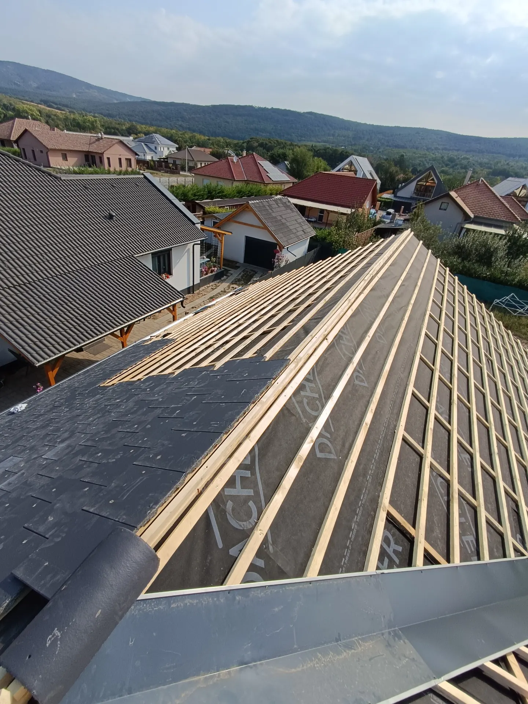

Tetőfedés
Új tető, teljes felújítás vagy javítás, akár a tetőszerkezettel együtt. Páraáteresztő fólia és mért lécezés kerül a fedés alá, hogy a tető évtizedekig száraz maradjon.
Ajánlatot kérek
Új tető, tetőfelújítás és javítás, lemezfedés, bádogozás és teraszok – egy csapattól, garanciával. Bugyiból indulunk, és 200 km-es körzetben dolgozunk.
Tetőfedésúj tető, felújítás, javítás
 Lemezfedéscserepes- és trapézlemez
Lemezfedéscserepes- és trapézlemez
 Bádogos munkákeresz, lefolyó, szegély
Bádogos munkákeresz, lefolyó, szegély
Szolgáltatásaink
Minden tetőmunkát egy csapat végez, ezért egy felelőse van a végeredménynek. Válassza ki, mire van szüksége – a felmérés ingyenes.
Új tető, teljes felújítás vagy javítás, akár a tetőszerkezettel együtt. Páraáteresztő fólia és mért lécezés kerül a fedés alá, hogy a tető évtizedekig száraz maradjon.
Ajánlatot kérekCserepes lemez és trapézlemez lakóházra, garázsra, melléképületre. Könnyű, gyorsan elkészül, és szakszerű alátéttel csendes is.
Ajánlatot kérekEreszcsatorna, lefolyó, kemény szegély, vápa- és kéménybádogozás. Minden bádogos lemezmunkát garanciával vállalunk.
Ajánlatot kérek
PVC-lemezes és bitumenes vízszigetelés lapostetőre, garázsra, teraszra. A régi réteget felmérjük, és csak azt bontjuk, amit kell.
Ajánlatot kérek
Fedett terasz, pergola, kocsibeálló – szerkezettel, fedéssel és bádogozással együtt, hogy a ház tetejéhez illő legyen.
Ajánlatot kérek
Felépítmény, tetőablak, ereszalj-deszkázás, egyedi formájú tetők. Ha nem szokványos a feladat, kimegyünk és megmondjuk, hogyan lesz belőle tartós megoldás.
Ajánlatot kérek
A Tető.pro garancia
A cserép csak a felszín. A tető attól tartós, ami alatta van: a fólia, a lécezés, a szegélyek és a bádog. Ezeket ugyanolyan gondosan csináljuk, mint a látható részt – és az elvégzett munkára garanciát adunk.
Így dolgozunk
Hívjon vagy írjon. Pár kérdés alapján már a telefonban megmondjuk, mire számíthat.
Kimegyünk, felmérjük a tetőt, és írásos árajánlatot adunk. A felmérés ingyenes.
Egyeztetett kezdés, rendezett munkaterület, folyamatos tájékoztatás a munka alatt.
Közös bejárás, takarítás, számla és garancia. A tető ezután évtizedekig nem kérdés.
Referenciák
Minden kép a saját munkánkról készült. Egy referencia többet mond bármilyen ígéretnél.
KiindulásBontás, a régi tetőrész helyén nyitott szerkezet.
SzerkezetAz új felépítmény vázszerkezete, a fedés előkészítése.
ÁtadvaBurkolt felépítmény, ablaksor, új fedés és bádogozás.
Rólunk
A Tető.pro mögött egy összeszokott tetőfedő csapat áll. Évek óta tetőkön dolgozunk: új tetőt építünk, régit újítunk fel, javítunk és bádogozunk.
Ugyanazok az emberek mérik fel a tetőt, akik utána megcsinálják, ezért a felmérésen elhangzottak a kivitelezésnél is érvényesek. Pontosan megbeszéljük, mi készül, miből és mennyiért – és tartjuk magunkat hozzá.
Gyakori kérdések
Ha a válasza nincs itt, hívjon nyugodtan – telefonon gyorsabb.
+36 70 265 6704Semennyibe. Kimegyünk, megnézzük a tetőt, és írásos árajánlatot adunk. Ez semmire nem kötelezi.
A tető méretétől és a munka fajtájától függ. Egy átlagos családi ház átfedése általában néhány nap, egy javítás gyakran egy nap alatt megvan. A felméréskor pontos időt mondunk.
Igen. Beázásnál először az okát keressük meg – a kémény mellett, a vápában, a szegélynél –, és azt javítjuk, nem csak a foltot.
Bugyiból 200 km-es körzetben dolgozunk: Budapest, Kecskemét, Szolnok, Csongrád, Hódmezővásárhely, Szeged és a környező települések.
Igen, számlaképesek vagyunk magánszemélynek és cégnek is, és az elvégzett munkára garanciát adunk.
Igen, ha kéri. Gyári rendszerekkel dolgozunk, a hozzájuk tartozó idomokkal. Ha már van anyaga, megnézzük, és megmondjuk, beépíthető-e.
A leggyorsabb a telefon: pár perc alatt átbeszéljük, és időpontot egyeztetünk a helyszíni felmérésre.
+36 70 265 6704